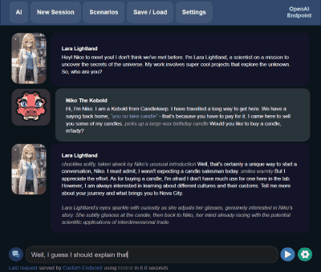

Stories & adventures
Write the next chapter.
Use Story mode for prose or Adventure mode for interactive fiction. Memory, world info, author’s notes, and editable generations help you shape a persistent story. Save and load your work as you go.
Explore the writing tools
Chat & characters
A conversation on your terms.
Chat with a model, load compatible Tavern character cards, or use Instruct mode for assistant-style tasks. Different UI themes let you choose a layout for your workflow. The model and prompt settings determine the quality of the response.
Start a conversation
Images & editing
Bring an idea into view.
Load supported image models and create in StableUI. Compatible workflows include image generation, image-to-image, inpainting, and instruction-based editing. Some models require additional encoders or a VAE; templates can gather those files.
Find image templates
More ways to create and connect.
Speech in. Speech out.
Use Whisper for speech recognition and a supported TTS model for narration or voice output. Each capability needs its own model files.
Learn more about speech in. speech out.Vision & video
Give a supported vision model images to understand, with its matching projector. Video generation is a separate workflow using supported video models.
Learn more about vision & videoMusic generation
Load the required music components, then experiment in MusicUI. The music template collection is a useful starting point.
Learn more about music generationConnect through APIs
KoboldCpp exposes compatible API endpoints for other clients, including OpenAI-style text and chat completions. Check which endpoints and features your client uses.
Learn more about connect through apisWork with documents
TextDB can retrieve relevant text for a conversation. Embedding-based workflows can use an additional local embedding model or a configured remote service.
Learn more about work with documentsUse the hardware you have
Run on the CPU, offload some layers, or use a compatible GPU more fully. CUDA, Vulkan, and Metal cover different hardware and build combinations.
Learn more about use the hardware you haveKoboldCpp, KoboldAI & llama.cpp
llama.cpp supplies core model-inference technology. KoboldCpp builds on it and adds its launcher, compatibility features, APIs, and media integrations. KoboldAI Lite is the included browser interface for interacting with the backend.
KoboldCpp is inspired by the original KoboldAI project. It packages the experience into ready-to-run builds, while retaining source builds and command-line options for people who need more control.
Features evolve with releases, and capabilities depend on the loaded models. Use the current wiki and release notes when planning a specific workflow.
Go deeper: KoboldCpp README · llama.cpp source · KoboldAI Lite source
Local when you want it
With downloaded models and local generation, you can work offline. Optional web search, cloud providers, tunnels, and remote APIs connect beyond your computer. Choose those features deliberately, and consider which service receives your prompts or files.
To use only the frontend, KoboldCpp supports --nomodel or the launcher’s Allow Launch without Model option. You can then configure a supported provider. The hosted Lite UI is also available at lite.koboldai.net.